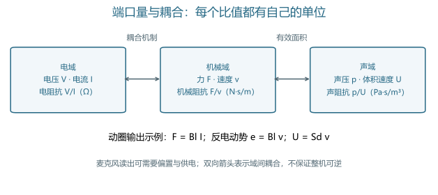
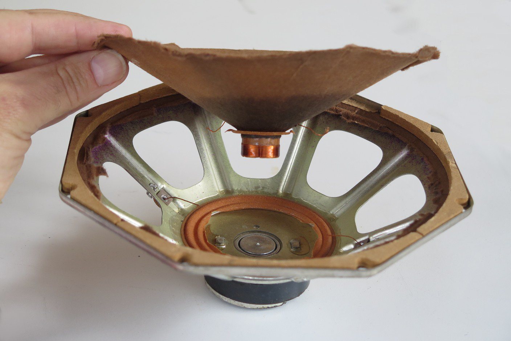
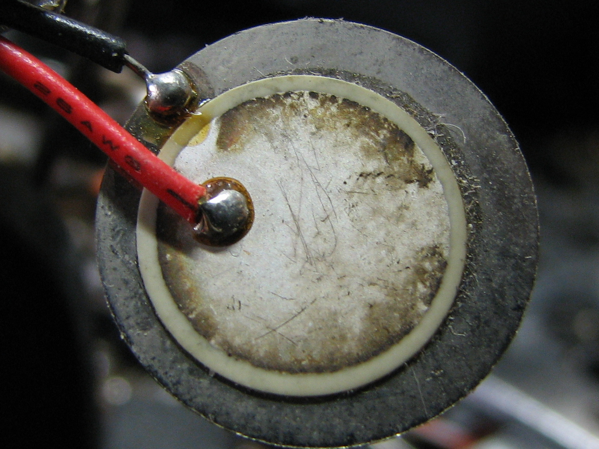
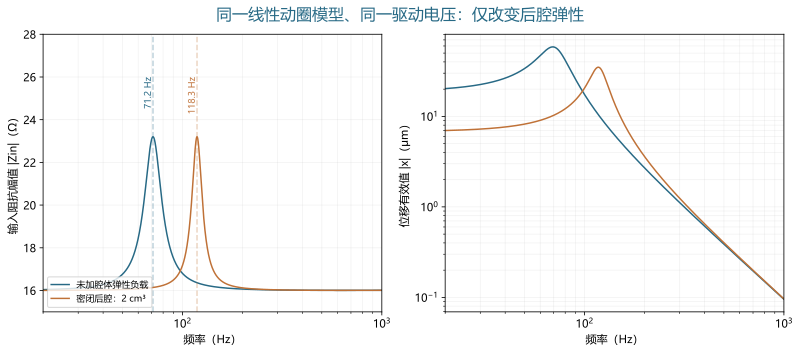
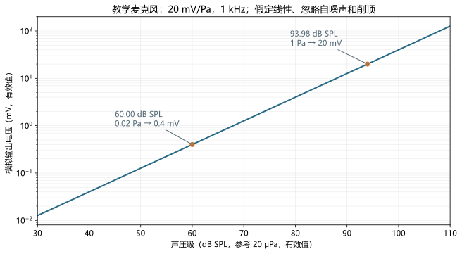
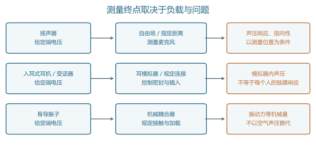

电声换能器
电、机械与声学端口的耦合及测量边界 · 深度词条 · 2026-10-10 · Draft，尚未完成专业审阅
电声换能器（electroacoustic transducer）是在电信号与声学信号之间建立物理转换的器件。麦克风把声学变化转为可读取的电信号；扬声器、耳机单元和助听器受话器把电驱动转为声音。许多常见结构通过振膜或其他运动部件连接电域与声域，因而理解换能过程需要同时考虑电路、机械运动和声学负载。13
听觉研究还使用骨导振子。它的主要输出经接触界面传入身体，评价时关注机械振动及加载条件。本词条将它作为与电声器件密切相关的电机械换能器讨论，避免把骨导输出当作空气中的声压。器件测量能够说明物理转换，却不能单独证明声音更自然、言语更清楚或临床获益更大。914
概念范围：器件、单元与系统
传感端与输出端
麦克风位于声学输入端，输出端则常称为扬声器、耳机驱动单元或受话器。这里“受话器”沿用听觉辅助设备的名称，指产生声输出的微型器件；它并不因为中文名称包含“受”字就成为声学接收传感器。同一种物理原理可以出现在不同角色中，例如动圈结构既可用于麦克风，也可用于扬声器。319
“换能单元”与“完整产品”也应区分。裸单元装入外壳后，前后腔、网罩、声管和连接件形成新的边界；完整耳机还包含放大、数字处理及佩戴界面。因此，某条响应曲线必须说明测的是单元、装配后的器件，还是从数字输入到声输出的整条链。输入端位置不同，即使名称相同，传递函数所包含的环节也不同。
换能、放大与信息处理
放大器主要改变电信号的幅度和驱动能力，滤波器改变电信号的频谱，换能器则跨越物理域。实际模块可以把三者集成在一起，但解释指标时仍需辨认其边界。某个数字麦克风的输出既包含机械敏感结构，也包含读出、增益和模数转换；其灵敏度不能直接当作裸振膜的物理转换系数。67
对于需要供电的麦克风，输出电功率并不全部来自入射声波。声压使敏感结构发生微小变化，偏置与电子电路把这种变化读出来，供电可以承担输出信号的能量。因此，“检测很弱的声音”不要求传感器从弱声中获取足够大的输出功率。讨论转换方向时，应分别说明信息如何传递、能量由哪里提供。
三个物理域与端口变量
阻抗需要明确是哪一对量的比值
在线性稳态分析中，电域常用电压 和电流 ，机械域用力 和速度 ，集中参数声域用声压 和体积速度 。后者表示每秒通过某个截面的空气体积，单位为 ，不是空气质点速度。各域阻抗可写为：
它们的单位分别是 、 和 。在传播问题中也常见比声阻抗 ，其中 是质点速度，单位为 。两种声学比值使用的变量不同，不能把数值直接代入同一个等效电路。阅读声管、腔体或辐射阻抗公式时，首先检查其端口定义，再检查几何面积是否已经包含在参数中。1
阻抗通常随频率变化，而且是复数。实部对应耗散，虚部反映储能；质量与弹性在不同频率范围内占据不同作用。直流电阻、某一频率下的阻抗幅值和厂家标称阻抗回答三个不同问题。仅用“这个单元是若干欧姆”不足以预测其全频段电流、机械运动和输出。
振膜面积连接机械域与声域
若振膜可近似为有效面积 的刚性活塞，其法向速度为 ，则 。若作用于这一面的均匀压差为 ，相应力为 。于是，这一声学负载反映到机械域时成为 。这是面积平方的来源，不是为了统一图形而任意加入的系数。
这一关系也给出模型边界：振膜不同部位存在明显振型差异，或者面上的压力分布不能视为均匀时，单一面积和速度就不足以描述整个器件。此时应考虑分布参数模型、模态模型或声固耦合计算。复杂模型是否必要，取决于频率范围、几何尺度和实际要预测的测量量。2

主要转换原理与器件分类
分类应同时说明物理机制和结构
电声器件常按用途、尺寸、制造方式或转换机制分类。这些维度可以交叉：微型并不意味着电容式，MEMS 也不是一种独立的换能效应。下面列出代表性机制；不同结构的具体频响、噪声和最大输出需要在同一条件下测量，不能由名称直接排序。
| 机制或结构 | 关键物理过程 | 常见角色 | 阅读规格时应注意 |
|---|---|---|---|
| 动圈式 | 磁场中的线圈受电流驱动；运动也产生感应电动势 | 扬声器、耳机、部分麦克风 | 线圈与振膜运动、悬挂、阻抗及负载共同决定响应 |
| 平衡电枢式，俗称动铁 | 固定线圈改变磁作用，电枢运动经机械连接驱动振膜 | 微型受话器、部分入耳耳机 | 运动主体是电枢；不能套用“线圈随振膜一起运动”的图景 |
| 电容式／驻极体电容式 | 声压使振膜与背板间的电容变化，偏置和读出电路形成输出 | 测量麦克风、消费麦克风 | 驻极体提供极化，不等于内置电子电路无需供电 |
| 静电驱动 | 电场产生作用于敏感结构的力 | 部分声输出器件和微结构执行器 | 偏置、间隙及驱动幅度影响工作点，不能直接使用动圈力因子 |
| 压电式 | 应力产生电响应；电场产生应变 | 麦克风、微型扬声器及相关振动器件 | 材料、机械约束、读出或驱动电路决定有效转换 |
动圈和麦克风基础来自器件技术资料；平衡电枢的固定线圈结构由制造商资料核对，本文不采用其中的音质优越性宣传作为比较证据。2345
从实物观察结构与封装
图 2 把用途、机制与封装分开呈现：扬声器拆解展示运动结构；驻极体例子区分敏感胶囊和电子组件；MEMS照片展示封装与板级连接；压电圆片展示另一种执行结构。观察实物时，应把照片能显示的部件与需要原理图或测量才能判断的性质分开。

a．动圈扬声器的拆解。拆开的扬声器：照片可见磁体、音圈与振膜。
Patrick.Nordmann / CC BY-SA 4.0 (via Wikimedia Commons) · 原图与来源 · 原图未修改。


b．驻极体胶囊与完整组件。左为MKE-3驻极体敏感胶囊，右为含缓冲放大器的完整麦克风组件。
Kae / CC BY-SA 3.0 (via Wikimedia Commons) · 原图与来源 · 原图未修改。


c．MEMS数字麦克风封装。电路板上的Akustica AKU230 CMOS MEMS数字麦克风封装；内部敏感结构不可见。
© Raimond Spekking / CC BY-SA 4.0 (via Wikimedia Commons) · 原图与来源 · 原图未修改。


d．压电声输出元件。蜂鸣器中的金属圆片与压电片；用于观察压电结构，不代表宽带音频扬声器性能。
Gophi / CC BY-SA 3.0 (via Wikimedia Commons) · 原图与来源 · 原图未修改。

MEMS 是制造与集成框架
MEMS 指微机电系统的结构与制造框架，其中可以实现电容检测、压电检测或多种驱动方式。把“MEMS 麦克风”和“电容麦克风”列为互斥类别，会掩盖不少 MEMS 麦克风本身使用电容机制的事实。数字输出则描述接口与信号链，不能据此推断敏感结构一定采用哪种机制。
微型化也不会自动消除机械限制。有限的位移、辐射面积、间隙和包装体积仍约束可获得的体积速度。研究新结构时，必须同时看敏感部分和其声学连接：芯片内部产生较大位移，不代表装入耳机后就能在目标频段得到足够声压。近期微型压电扬声器研究展示了结构设计、制造与负载建模之间的这种联系。17
动圈小信号模型：从端电压到运动
驱动力与反电动势共同进入方程
采用正弦稳态、 相量约定，并把各振幅按有效值理解。设线圈电阻为 、电感为 ，力因子为 ，运动质量为 ，机械损耗为 ，悬挂刚度为 。本文的线性教学模型写为：
第一式中， 是运动产生的反电动势；第二式中， 是驱动力。 的单位可写为 ，也等价于 。机械运动因此会反过来影响电流，不能先把线圈当作固定电阻计算电流，再完全独立地求振膜运动。1
令括号中的总机械阻抗为 ，则电输入阻抗为：
最后一项反映运动经耦合返回电端口的影响。它解释了为什么改变机械或声学负载，可以在电阻抗曲线上留下变化。这里把电感当作常数，是为了保留清晰的教学关系；真实器件还可能需要频率相关损耗、涡流、非活塞运动及更多声学支路。参数足够多并不保证模型可靠，仍需检验它能否预测独立的测量条件。
输入阻抗峰与位移峰不是同一件事
在只包含质量与刚度的未阻尼机械系统中，固有频率为 。但实际驱动下的位移还取决于阻尼、反电动势以及恒电压或恒电流等条件。因而，机械固有频率、电阻抗幅值峰和恒电压位移最大值，不应不加区分地称为同一个“共振频率”。
这也影响实验解释。若某个频率下电输入阻抗增大，在恒端电压条件下电流可以减小；机械响应仍由完整耦合方程决定。只看电流变小就判断声输出一定变弱，或只看位移变大就判断远场声压一定同比增加，都会跳过声学辐射与测量位置这一环。
声学负载：腔体、声管与泄漏
一个可复算的密闭后腔例子
对于尺寸远小于波长、可视为压力均匀的密闭腔体，忽略泄漏与热黏性损耗，并采用绝热空气压缩近似，声顺为 。其负载阻抗为 ，反映到活塞振膜后相当于增加刚度：
以下全部是教学设定：，，，，，，；空气密度 ，声速 。两种条件都以 驱动，均忽略辐射负载，只比较是否增加后腔弹性。
未增加腔体弹性时，未阻尼机械固有频率约为 。加入体积 的密闭后腔后，空气附加刚度约为 ，固有频率变为 。图 3 按前述耦合方程直接求解，参数、代码和数值残差检查随图存档；它说明负载怎样改变同一模型，不预测任何实际产品。

装配与佩戴为什么会改变结果
后腔主要影响振膜背面的负载，前腔、声管和耳塞则影响声音向外或向耳道传递的方式。短管可以在合适频率范围内用集中质量与损耗近似；当管长相对于波长不可忽略时，传播与驻波需要进入模型。单纯增加若干集总元件，未必能恢复已经超出近似范围的空间声场。
泄漏相当于额外的声学通路。若密闭前提被破坏，模型中的压力积累和低频输出就可能改变。对入耳器件，连接口、适配器和插入状态都是实验条件；对扬声器，箱体和障板也是系统的一部分。比较两条响应曲线前，应确认变化来自器件本身，还是来自连接、密封和测量位置。耳模拟器提供的是规定的声学负载与测量位置，不是每个真实耳朵的完整复制。13
灵敏度、声压级与效率
先读参考量，再比较分贝数
模拟麦克风的灵敏度可表示为输出电压与输入声压之比，例如 。其分贝表示以 为参考；空气声压级采用 的参考声压。两者可写为：
设教学麦克风在 的灵敏度为 ，即约 。在线性、忽略噪声和削顶的条件下， 对应 ，产生 ； 对应约 ，产生 。这些是同一声压—电压映射，不是两个不同的增益阶段。6

数字麦克风常以 dBFS 表示给定声输入对应的数字输出。数字满量程与 属于不同参考，峰值与有效值约定也可能不同。因此，不能直接用“−26 大于 −42”判断两种接口谁更灵敏。需先明确满量程定义、模拟增益与 ADC 输入范围，再把它们换算到可比较的声输入及输出量。6
输出灵敏度与能量效率分别评价
扬声器的电压灵敏度可以描述指定频率、距离与方向上的 ，耳机则常在指定耦合装置中报告给定驱动对应的声压级。写出“若干 dB”而省略输入电压、输入功率或测量装置，会失去比较基础。例如 只在近似 纯电阻上对应约 ；真实频变阻抗下，应根据电压、电流及相位计算有功输入。
效率比较的是输出功率与输入功率。采用有效值相量时，电有功输入为 ；声功率需要在指定表面上积分声强，不能用单个位置的声压平方直接代表所有辐射功率。封闭负载中的声压可以较高，同时净传输有功功率仍取决于声压与体积速度的相位。由此，较高的声压灵敏度不自动等于较高效率。2
噪声、非线性与可用范围
弱声端与强声端受到不同约束
麦克风在弱输入下受机械热噪声、读出电路和后续电路噪声等限制。只看灵敏度无法知道安静条件下能否分辨目标声音；还要看噪声带宽、频率加权和等效输入噪声。若把输出噪声除以灵敏度换算回输入端，所用灵敏度与噪声谱必须对应同一频段和处理条件。前置放大器的选择也会改变系统噪声、输入负载及可用电压范围。7
强输入端可能受到机械位移、间隙、供电和电子削顶限制。输出器件还可能随温升改变电阻与工作状态。因此，应将“某个频率的最大输出”“满足指定失真限值的输出”和“可持续承受的驱动”分别描述。短时信号与长期驱动不能仅凭峰值电压相同就视为等效，所关注的热和机械条件并不相同。
小信号模型不能预测所有大信号行为
前述常数模型意味着响应随输入幅度成比例，并且不会自行产生新频率。真实动圈器件的力因子、悬挂刚度或电感可能随运动及工作点变化，这属于大信号模型讨论的范围。IEC 62458 的公开范围将主要非线性参数及其测量作为专门问题；它没有把这种模型泛化为所有换能机制的统一表达。10
对于单频输入，若输出基频和各谐波有效值分别为 ，常用的基频归一化总谐波失真比为：
报告百分数时乘以 。必须注明测试频率、输出或驱动幅度、纳入的谐波阶数和带宽，并检查仪器采用的分母约定。THD+N 还包含测量带宽内的噪声等成分；低输入时，噪声占比增大可能让 THD+N 上升，不能把整条曲线都解释成机械非线性加重。
线性均衡可以改变输入频谱，从而避开较大的共振驱动或改变输出水平，但它不会凭空获得一个准确的非线性逆模型。研究中观察到均衡后 THD 降低，还应检查是否同时降低了某些频率的声输出。物理失真指标与听感、可懂度之间也需要另行设计实验，不能用单一失真比例替代听觉评价。18
测量链与标准的适用范围
先确定测什么，再选择装置
一条可解释的测量链需要明确刺激、输入参考端、器件与负载、输出参考位置，以及采集与分析处理。测扬声器时可在指定声场、距离和角度读取声压；测入耳输出时，应记录耦合器或耳模拟器与连接条件；测骨导输出时，则关注规定机械负载上的振动响应。设备名称相同并不意味着三种测量可以共用声压参考。
对接收器件，还需分辨压力场、自由场或扩散场条件与相应修正。声场和麦克风几何影响高频测量，电输出必须经过已知灵敏度和信号链转换，才能追溯到声学量。对一个标称为“平直”的麦克风，也应询问平直响应适用于什么声场，而不是直接在任意安装条件下使用。4

按问题选择标准，而非只写“按 IEC 测试”
| 要评价的问题 | 相关标准与公开范围 | 本词条据此作出的区分 |
|---|---|---|
| 电输入到声输出的传递 | IEC 60268-21:2018，输出为基础的声学测量 | 声输出物理测量与知觉评价分开 |
| 电端口和机械运动 | IEC 60268-22:2020，换能器电与机械测量 | 可以分别检查电阻抗、运动及相关边界条件 |
| 扬声器等器件的大信号参数 | IEC 62458:2010 | 力因子、刚度、电感等非线性需要专门表征 |
| 声系统用麦克风 | IEC 60268-4:2018 | 包括灵敏度、指向性和动态范围等；范围不含测量麦克风 |
| 普通耳机与耳塞 | IEC 60268-7:2025 | 范围排除测听耳机及助听器受话器等，不覆盖所有入耳设备 |
| 入耳连接的规定声学负载 | IEC 60318-4:2010 | 耳模拟器规范与待测产品的性能规范不同 |
| 骨导振子的规定机械负载 | IEC 60318-6:2007 | 使用机械耦合器，不能用空气声压输出替代 |
| 气导助听器的电声特性 | IEC 60118-0:2022 | 耦合器或耳模拟器测量与真实耳内效果分开 |
| 实验室标准麦克风的互易压力校准 | IEC 61094-2:2009，及 2022 年修订 | 互易法具有器件和方法条件，不表示任意消费麦克风都可反向校准 |
上述范围分别依据官方公开目录核对。8910111213141516
这里没有获得完整付费标准，不据目录转录容差、操作条款或认证要求。范围排除意味着应寻找对应规范，不意味着某种产品性能较差。报告引用标准时，应给出版本及实际执行的测量方法；仅列一个标准编号，无法让读者判断连接、信号和处理过程是否符合它。
校准与重复性要贯穿整条链
声输出变化可能由信号源、放大器、负载、测量麦克风或分析设置引起。若软件显示“输入电压不变”，还应确认它指信号源设定值还是器件端实测值。一个有输出阻抗的放大器在负载变化时可能产生不同端电压；忽略这一点，就会把电驱动变化误解释为单纯声学负载效应。
可复现的报告应记录刺激类型和持续时间、频率范围、驱动单位与端口、装置型号及校准状态、安装和密封方式、环境条件、采集增益、带宽与加权、重复次数及其变化。对于重新插入耳塞或重复加载骨导振子，安装变化本身也是需要评价的重复性来源。报告的精度应与测量不确定度相称，而不由软件显示的小数位数决定。
听觉研究与辅助听觉中的作用
实验刺激的物理接口
纯音测听和其他听觉实验需要把预定的电刺激变成受试者实际接收的声音。数字文件幅度相同不保证入耳声压相同，因为设备增益、输出单元、佩戴与频率响应都可能不同。测听校准连接了信号设定和物理输出；dB HL 的参考零点也不能直接当作任何器件上的 dB SPL。
耳声发射测量同时使用刺激输出与声学接收，因此需要区分耳内目标响应、刺激及其残余、探头连接和系统本底。这是“既要知道送进去什么，也要知道测回来什么”的例子。理解换能器端口，有助于识别实验链中的混淆，但不能仅凭电子测试就把全部耳内声学现象定位到某个生理机制。
助听器、耳机与骨导路径
助听器把输入麦克风、处理与放大以及输出受话器连接起来。麦克风噪声、受话器可用输出、通气与反馈通路，属于系统设计中相互制约的环节。实际获益还涉及听力状态、验配、使用环境和使用者表现。器件有足够带宽或低失真，是物理条件中的一部分；是否改善言语可懂度，需要相应行为或临床证据。19
骨导器件则把电驱动转为接触面的机械作用。耦合器测量便于在规定条件下比较器件，但患者的接触、身体结构和传导路径属于进一步问题。把骨导振子贴在空气声测量麦克风旁读取辐射声，不能替代对骨导输出的适当评价。14
人工耳蜗的输入端仍可使用麦克风，但后续主要通过编码与电刺激进入神经系统。因此，整套植入系统不能简单归入“像扬声器一样在耳道产生声压”的输出模型。比较技术时，应分别指出声学接收、信号编码和刺激接口在哪一环改变了信息。
近期研究：从新结构到可验证系统
微型压电结构的证据层级
Becker 等在 2025 年报告折叠压电 MEMS 扬声器，以侧壁驱动结构提高芯片面积的利用，并进行了制造样品的声学表征。其结论报告在 IEC 耳模拟器中、 驱动下， 输出为 ；这证明了该结构可以工作，却不证明它已达到所有入耳产品所需的输出。文中对未来提升的预测也不能当作已完成测量的结果。17
评价这种研究，应分别辨认理论设计、有限元或等效电路预测、制造样品、封装后测量，以及使用者评价。每一阶段回答不同问题。若前一阶段给出可行的机械运动，后一阶段仍需验证气密性、声管连接、驱动电压和可靠性；若原型声压曲线与模型相符，也不能直接推出言语任务或佩戴体验得到改善。
模型均衡的收益与代价
Massi 等在 2025 年将入耳压电 MEMS 扬声器及耳模拟器建立为等效电路，用逆模型生成预处理信号，并以实际声学测量检验频响均衡。作者明确区分线性响应补偿和非线性补偿，也指出部分高频失真降低伴随声输出下降。本词条据此说明均衡存在水平与失真的权衡，不把该原型结论推广为所有耳机的通用改善幅度。18
这一研究路线连接了器件与数字处理：模型需要包含负载，均衡需要考虑驱动余量，实验需要检验目标输出是否真正达到。若把测得的频响直接求倒数，深谷处的巨大增益可能要求超出器件能力的电压或位移。实际实现还应检查稳定性、延迟、噪声放大、参数变化和重新佩戴后的偏差，不能只展示一条理想平直曲线。
阅读路径与判断问题
入门可先阅读声波与传播，理解声压、传播和边界，再用本文的端口关系追踪电压如何影响运动与声音。继续阅读动态范围和测听校准，可以把幅度限制与参考量连接起来；最后进入助听器及其使用者评价。开放空间应用还需要结合房间声学，因为测量位置和反射会参与形成实际输入。
读一份器件规格、论文或实验报告时，可依次检查以下问题：
- 转换机制和接口是什么？ 分清敏感结构、驱动、读出与数字处理，确认输出量是电压、声压还是机械量。
- 参考量是否一致？ 写出分贝的参考、峰值或有效值约定、驱动端口、频率和测量位置，再比较数值。
- 模型包含什么负载？ 检查腔体、声管、泄漏、装配和接触是否进入模型，辨认集中参数近似的频率范围。
- 改善发生在哪个终点？ 区分模型拟合、实测输出、噪声或失真、人体听觉表现，检查收益是否伴随输出水平或驱动余量的变化。
- 结果能否重复？ 确认重新安装、不同工作点和独立测量条件下的表现，而不仅是同一数据上的拟合程度。
这些问题把电声器件放回完整的听觉链条：电端口决定驱动与读出，运动结构实现转换，声学或机械负载约束输出，实验与使用者评价则确定结果能够支持到哪一步。
参考文献与证据范围
[1] COMSOL (n.d.). Lumped Loudspeaker Driver. COMSOL Multiphysics 6.4 官方模型文档。访问范围：documentation。阅读 Introduction、Model Definition 及集总电／机械参数、反电动势和背腔比较段落；作为线性建模背景。本文公式采用独立简化，参数非文档产品参数。
[2] COMSOL (n.d.). Loudspeaker Driver — Frequency-Domain Analysis. COMSOL Multiphysics 6.4 官方模型文档。访问范围：documentation。阅读电磁力、声固耦合、阻抗、声压和辐射评价段落；支持多物理域分析与不同输出量的区分，不把示例仿真当作通用产品性能。
[3] NI / PCB Piezotronics (2025). Microphone Handbook: Types, Components & Testing. NI 官方传感器技术资料（PCB 材料获许可转载）。访问范围：documentation。阅读电容、驻极体、动圈结构及极化／前置放大器说明；解释基本转换和供电关系。转载内容不计为第二个独立研究。
[4] NI (n.d.). Measuring Sound with Microphones. NI 官方传感器技术资料。访问范围：documentation。阅读麦克风物理类型、选择、场响应及信号调理说明；支持压电和电容检测、场条件和测量链。未将声压与声压级混作同一单位。
[5] Knowles Electronics (n.d.). Balanced Armature. 制造商官方结构说明。访问范围：documentation。仅采用固定线圈与低质量振膜的结构描述，并对照制造商技术资料；不采用音质或消费者满意度宣传证明比较优势。
[6] Jerad Lewis (2012). Understanding Microphone Sensitivity. Analog Dialogue, 46 (May), Analog Devices。访问范围：documentation。阅读 Analog vs. Digital 和 Choosing Sensitivity：模拟／数字参考、峰值／有效值约定及灵敏度不等于质量。换算图使用独立假设的20 mV/Pa，不引用产品性能。
[7] Jerad Lewis (2013). AN-1165: Op Amps for MEMS Microphone Preamp Circuits (Rev. A). Analog Devices Application Note。访问范围：documentation。阅读第1–3页 Introduction、Noise、THD+N、Supply Voltage 及电路说明；支持读出增益、噪声带宽和供电限制。不照搬示例器件推荐。
[8] International Electrotechnical Commission (2018). IEC 60268-21:2018: Acoustical (output-based) measurements. IEC 官方标准目录。访问范围：documentation。读取公开 Scope 与版本状态；支持电输入到声输出物理测量，不含知觉评价。未获得完整付费标准，不据目录声称符合性。
[9] International Electrotechnical Commission (2020). IEC 60268-22:2020: Electrical and mechanical measurements on transducers. IEC 官方标准目录。访问范围：documentation。读取公开 Scope 与版本状态；区分电／机械测量、小大信号和应用边界。未获得完整付费条款。
[10] International Electrotechnical Commission (2010). IEC 62458:2010: Electroacoustical transducers — Measurement of large signal parameters. IEC 官方标准目录。访问范围：documentation。公开范围列出电动／电磁电机、悬挂及力因子、刚度、电感等主要非线性；不把这一范围扩展成所有换能器的通用模型。未读完整条款。
[11] International Electrotechnical Commission (2018). IEC 60268-4:2018: Microphones (RLV 目录). IEC 官方标准目录。访问范围：documentation。读取公开范围：声系统麦克风的灵敏度、指向性、阻抗、动态范围和外界影响，范围不含测量麦克风；目录 RLV 含官方版本及红线版本，未获取完整标准。
[12] International Electrotechnical Commission (2025). IEC 60268-7:2025: Headphones and earphones. IEC 官方标准目录。访问范围：documentation。读取2025版公开范围及排除项，核对测听耳机、助听器受话器及 ANC 特性不在本标准所述范围内；不引用未读测试条款。
[13] International Electrotechnical Commission (2010). IEC 60318-4:2010: Occluded-ear simulator for the measurement of earphones coupled to the ear by means of ear inserts. 官方标准目录／计量词汇／专业指南／软件文档。访问范围：documentation。官方目录、摘要和状态：核对装置／性能范围；未获得完整付费标准，不据目录给出符合性结论。
[14] International Electrotechnical Commission (2007). IEC 60318-6:2007: Mechanical coupler for the measurement on bone vibrators. 官方标准目录／计量词汇／专业指南／软件文档。访问范围：documentation。官方目录、摘要和状态：核对装置／性能范围；未获得完整付费标准，不据目录给出符合性结论。
[15] International Electrotechnical Commission (2022). IEC 60118-0:2022: Measurement of the performance characteristics of hearing aids. IEC 官方标准目录。访问范围：documentation。读取公开范围：气导助听器的耦合器或耳模拟器电声特性，区分类型／生产质量测量与真实耳内表现。未获得完整付费条款。
[16] International Electrotechnical Commission (2009/2022). IEC 61094-2:2009: Pressure calibration by the reciprocity technique; AMD1:2022. IEC 官方标准目录。访问范围：documentation。读取基础版公开范围，并核对2022修订目录 https://webstore.iec.ch/en/publication/67521；限定实验室标准等适用麦克风及复杂压力灵敏度。未转录互易校准步骤。
[17] Becker D, Scharf R, Leonhard T, Merz A, Bittner A, Dehé A. (2025). Meander-shaped piezoelectric MEMS loudspeaker with maximized area efficiency for in-ear applications. Sensors and Actuators Reports, 9, 100319。访问范围：fulltext。读取出版者公开全文的设计、声学表征、Discussion 和 Conclusion 相关段落；核对16 Vp、1 kHz、64 dB SPL及耳模拟器条件。区分制造原型与未来预测，未声称逐段通读全文。
[18] Massi O, Giampiccolo R, Bernardini A. (2025). Equalizing the In-Ear Acoustic Response of Piezoelectric MEMS Loudspeakers Through Inverse Transducer Modeling. Micromachines, 16(6), 655。访问范围：fulltext。通过 Europe PMC XML 阅读第2节负载模型、第3节线性逆模型限制、第4节实测与 THD 权衡、第5节结论；支持线性均衡及声输出下降的代价，不迁移论文峰值／DFT幅度到本文RMS示例。
[19] National Institute on Deafness and Other Communication Disorders (2022（页面更新）). Hearing Aids. NIDCD 官方资料。访问范围：documentation。助听器的麦克风、放大和扬声器链路及放大的功能边界；不作产品推荐。